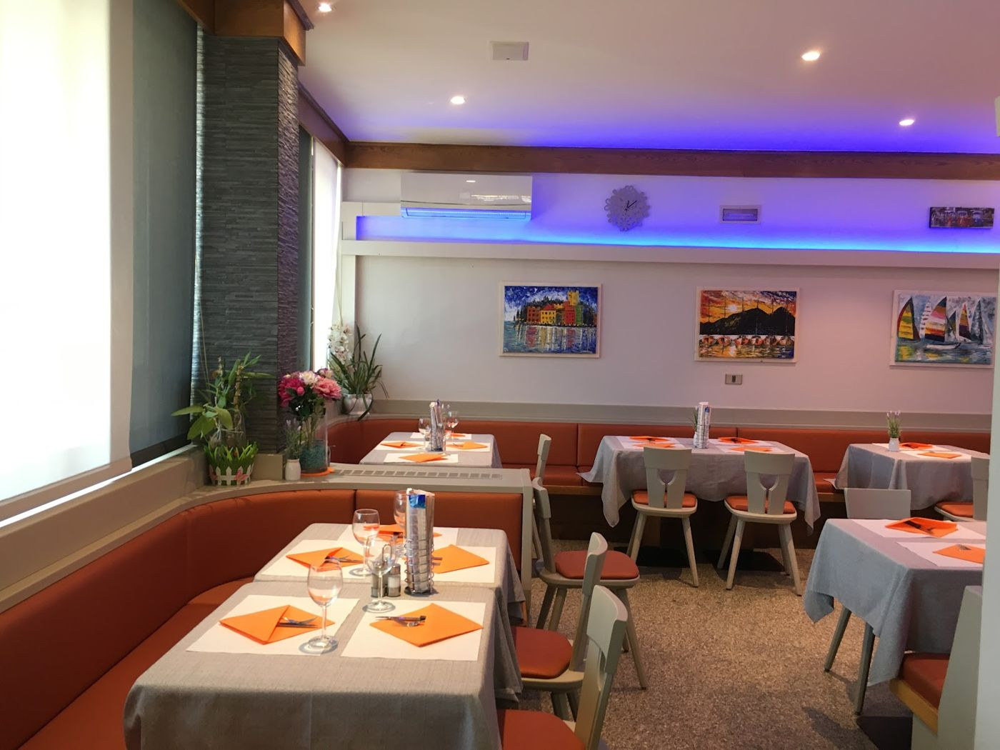

La cucina
Dal 1986, a Riva del Garda: pizze, primi piatti, insalatone e piatti tipici, in un ambiente familiare e comodo.
Le pizze
Gustose, leggere e digeribili, con ingredienti selezionati. Anche da asporto.
Piatti tipici
Carne salada, gulasch, canederli.
Primi piatti e insalatone
Nel menu, accanto alle pizze e ai piatti tipici.
Per qualsiasi domanda sul menu, o per ordinare la pizza da asporto, chiamateci.
Viale Trento 59/G · Riva del Garda · Tel. 0464 552037 · pizza anche da asporto
